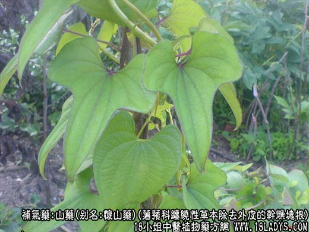
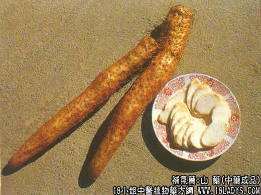
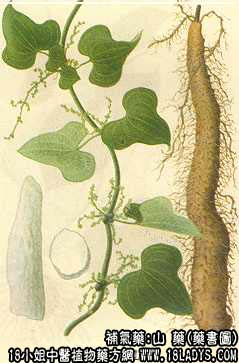

本品为常用中药。始载《神农本草经》，列为上品，原名“薯蓣”。山药之命始见于《本草衍义》。商品因加工方法不同，分为毛山药与光山药两种。
别名：怀山药。
来源：为薯蓣科多年生缠绕性草本植物薯蓣除去外皮的干燥块根。多为栽培，亦有野生。
产地：原产山西平遥、介休，后主产河南博爱、武陟，温县，现除西北，东北高寒地区外其它各省均有栽培。两广及福建等地多有野生。
采集加工：冬季地上苗枯萎后采挖，挖回块根，切去根头，洗净泥土，用竹刀刮进外皮及须根，放熏炕中用硫磺熏8～11小时，待山药变软，取出进行烘晒到外皮收干时，再放入炕中熏蒸24小时，使内在水分向外散发，山药又回潮变软、再次进行烘晒到外皮干硬后，停止烘晒，堆垛发汗，而后反复烘晒发汗数次，直至全干，即为毛山药。选择粗大顺直的毛山药，用清水浸润均匀后，放平板上，用木板压于山药上进行搓揉，使成圆柱形，两端切齐，趁潮湿用硫磺再熏一遍，晒干后，打磨光洁即为光山药。
性状鉴别：毛山药略呈圆柱形，微弯曲稍扁，一般长10～25厘米，直径1～3厘米。表面白色，有的带纵沟皱，有的略平坦，未去尽栓皮或须根深陷处则带有深褐色斑块或小点。两端不平齐。质坚实，断面白色，富粉质，显颗粒状，无木质纤维组织。气无，味甘淡、微酸。
光山药呈圆柱形，一般长10～20厘米，直径1～3厘米。表面洁白光滑，两端平截。余与毛山药相同。两种山药，均以条干均匀，质坚实，粉性足，色洁白者为佳。
主要成分：含皂甙、粘液质、精氨酸、尿囊素、淀粉酶、胆硷等。
功效与作用：1、益气补脾：与其所含营养成分和粘液质、淀粉酶等有关，有滋补作用，能助消化、补虚劳、益气力、长肌肉；2、止泻；3、祛痰。
炮制：切片，生用或麸炒。
性味：甘、平
归经：入脾、肺、肾经。
功能：健脾开胃，补气养阴，止泻涩精。
主治：脾虚泄泻，虚劳久嗽，消渴遗精，带下尿频等症。
临床应用：1、用于脾肾虚证，作一般滋养补益药用。如属脾胃虚弱，饮食减少，体倦神疲，配白术、莲子肉、党参等；如属肾阴虚损，表现遗精、盗汗等症状，配熟地、山茱萸肉等。
2、用于脾虚泄泻，大便稀溏如水样，含不消化食物，可与党参、白术、茯苓、薏苡仁等配伍，方如参苓白术散；或配葛根、茯茶等，方如山药汤。又可重用山药一味，以补脾止泻、助消化，其法为每日以山药60g煎水代茶。小儿脾虚之消化不良兼有虚汗，则以山药12g、浮小麦9g、神曲9g、苡米9g煎水代开水服。
3、用于肺脾两虚之慢性咳嗽，表现为痰多清稀、食欲减退、身体消瘦、精神困倦等（可见于肺结核），常用山药配党参、川贝、茯苓、杏仁等补气和止咳化痰药，方如和肺饮。
4、用于治疗消渴症（病情相当于轻型和中型糖尿病），效果颇称满意，可用单位作为食疗，或每日以150g煎水代茶，长期服用；也可配黄芪、天花粉、麦冬、生地等，方如山药消渴饮。
此外，因服寒凉药过多而致大便滑泄，也可用生山药60～120g浓煎服用以止之。
使用注意：属于炎症腹泻者忌同；大便干结者慎用（多服反易致气滞）；脾虚而腹虚胀满闷者也应慎用。又本品与硷性药混合，或煎煮时间过久，会使含淀粉酶失效。
用量：9～30g，大剂用至90～120g作食料时适量，大量可用至250g。
处方举例：1、山药汤：淮山30g，豆蔻9g，煨葛根9g，茯苓15g，银花9g，灸甘草6g，水煎服。
2、和肺饮：淮山12g，党参9g，茯苓9g，百合9g，杏仁7.5g，灸甘草7.5g，水煎服。
3、山药消渴饮：黄芪12g，党参15g，天花粉6g，麦冬9g，生地15g，水煎服。
注：1、山药过去规格繁琐，按产地及根条粗细长短，分成很多名称，如山西产的称西超，产河南的称坏超，又各分若干等级。并有因根条体质坚重而命名的鸡骨山药等。1964年商业、卫生两部颁发了54种中药材规格试行标准，根据山药的支条大小颜色的黄白，将光山药订为1～4等，毛山药1～2等，但均系指家种的长条形山药加工的产品。此外江南地区，尚有野生或栽培的“脚板薯”加工的产品，薯形粗短，表面略平坦而无抽皱，中心多有细孔隙，粉质洁白，现多产于广西，运销全国。也有的地区因其块大内部不易干燥，加工时切成长方条形，称方山药，如四川，多地产地销。
2、光、毛山药的疗效相同，为了节省劳力和加工费用，减少不必要的搓圆打光工艺，现国内销售以毛条山药为主。出口外销，则仍保持加工山药的传统习惯。